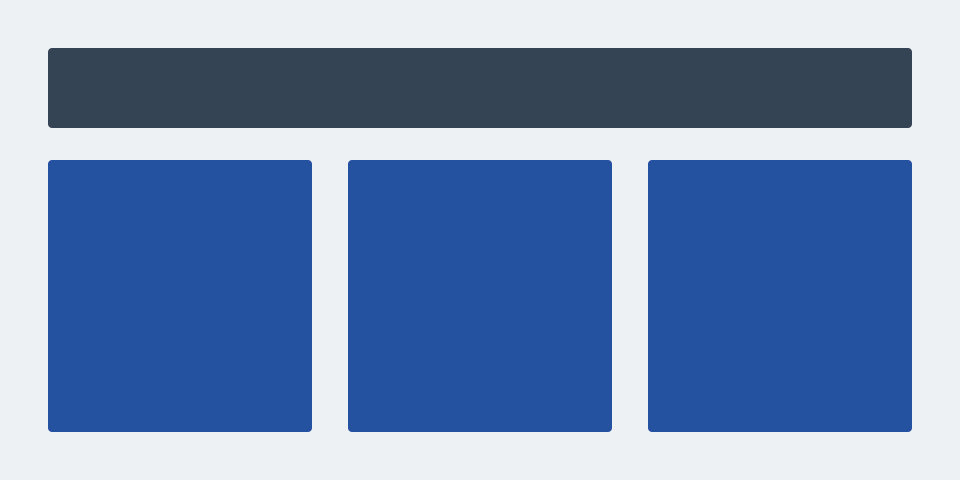

01 / Typography
A practical type scale
System fonts, relative sizing, and comfortable line spacing. This paragraph includes strong text, emphasis, and an underlined link.
Heading 3 — A section within a section
Heading 4 — Supporting details
Heading 5 — A smaller group
Heading 6 — The finest level
The page title demonstrates heading 1; each main section demonstrates heading 2. Use Tab to inspect visible keyboard focus on links and buttons.
02 / Containers & sections
Room for your content
Containers center content with responsive side padding. Section spacing increases at 48rem.
03 / Native CSS Grid
Columns without calculations
The default grid has three equal columns from 48rem, with a responsive gutter. All examples stack into one column below that breakpoint.
Two columns, wider gutters
Set --skel-grid-columns: 2 and --skel-grid-gap: 2rem on this grid.
Four columns, no gutter
05 / Responsive images
Fit the space, keep the ratio

06 / Get started
Use only what you need
Link css/skelekron.css from your HTML. To customize the foundation,
configure the Sass settings, then run npm run build.
Colors, type, spacing, breakpoints, container sizes, and grid defaults live in scss/_settings.scss.